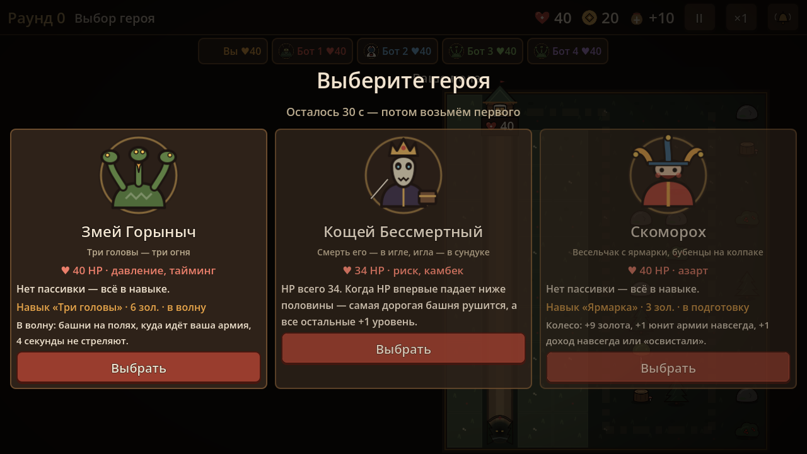
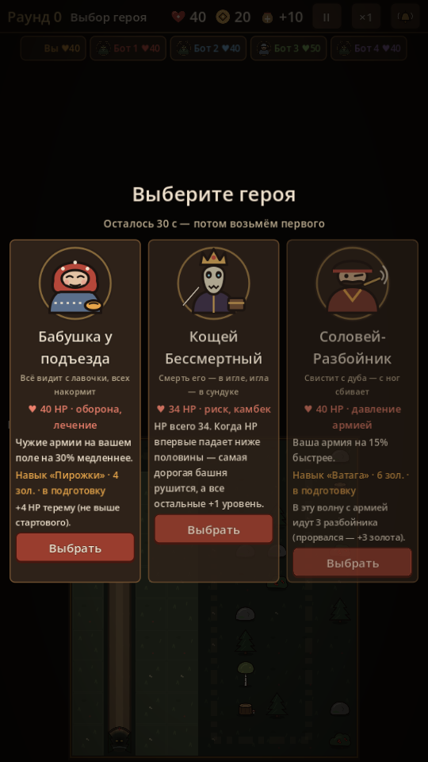
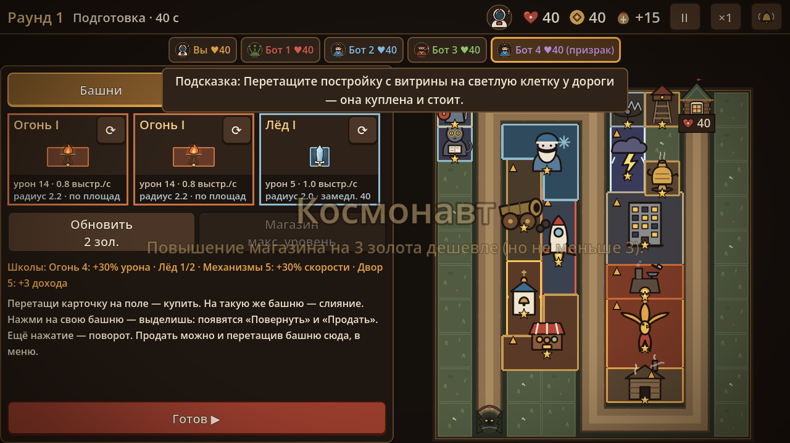
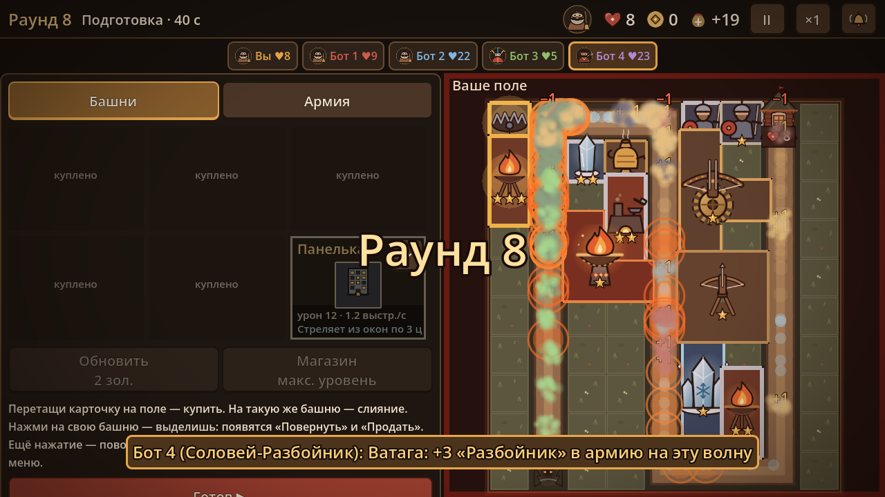
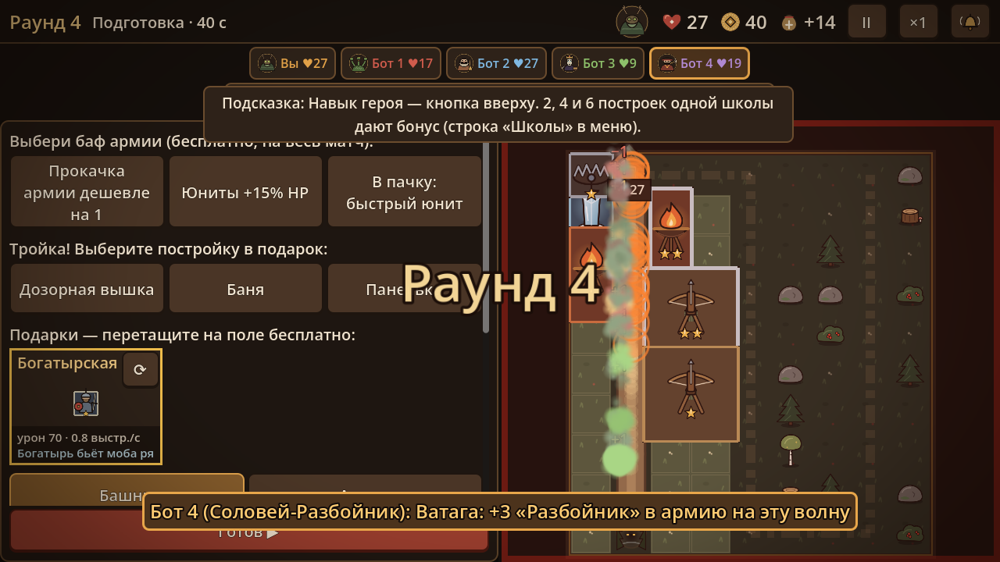
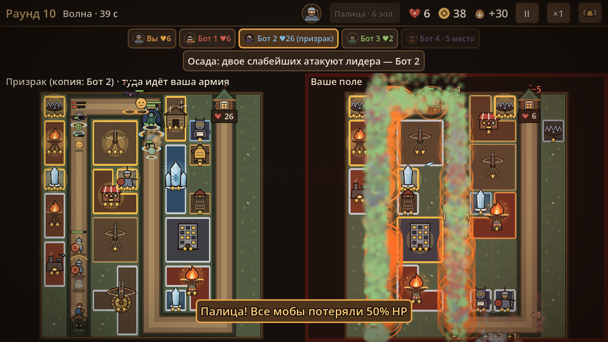
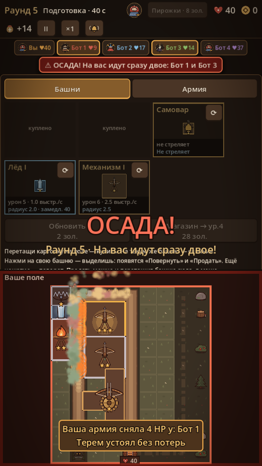

ночь героев
Что сделано за ночь 30 октября 2026 — герои, постройки, мобы
Три карточки: портрет, HP, пассивка, навык с ценой и фазой. 30 секунд на выбор — потом берётся первый.


Навык — кнопка вверху панели: стоит золото, раз за раунд, после применения дорожает. Одни навыки — в подготовку, другие — в волну.
♥ 40 HP · магазин, слияния
Первое обновление витрины в каждом раунде бесплатно.
Навык «Варево» · 10 зол. · в подготовку: Следующая купленная башня — сразу 2-го уровня.
♥ 40 HP · экономика, гибкость
+10 золота на старте. Проданная башня всегда возвращает всё вложенное.
♥ 40 HP · темп, уровень магазина
Повышение магазина на 3 золота дешевле (но не меньше 3).
♥ 50 HP · оборона
Терем крепче: 50 HP.
Навык «Палица» · 4 зол. · в волну: В волну: все мобы на вашем поле теряют 45% текущего HP.
♥ 40 HP · оборона, лабиринт
Каждый моб на вашем поле на середине пути один раз отброшен на 3 клетки назад.
♥ 40 HP · оборона, лечение
Чужие армии на вашем поле на 25% медленнее.
Навык «Пирожки» · 4 зол. · в подготовку: +4 HP терему (не выше стартового).
♥ 40 HP · давление армией
Ваша армия на 20% быстрее.
Навык «Ватага» · 6 зол. · в подготовку: В эту волну с армией идут 4 разбойника (прорвался — +3 золота).
♥ 40 HP · давление, тайминг
Нет пассивки — всё в навыке.
Навык «Три головы» · 4 зол. · в волну: В волну: башни на полях, куда идёт ваша армия, 7 секунд не стреляют.
♥ 34 HP · риск, камбек
HP всего 34. Когда HP впервые падает ниже половины — самая дорогая башня рушится, а все остальные +1 уровень.
♥ 40 HP · азарт
Нет пассивки — всё в навыке.
Навык «Ярмарка» · 3 зол. · в подготовку: Колесо: +10 золота, +1 юнит армии навсегда, +1 доход навсегда или «освистали».
Соседи — постройки, касающиеся стороной. Усилитель не стреляет сам, а даёт бонус всем соседям, поэтому его ставят в середину кучи. Выделенная постройка показывает соседей золотыми линиями.
Тир 1 · клетки:
Не стреляет. Соседи (касаются стороной) бьют на 30% сильнее.
Тир 1 · клетки:
Не стреляет. Соседи стреляют на 25% чаще.
Тир 2 · клетки:
Не стреляет. Соседи бьют на 1 клетку дальше.
Тир 1 · клетки:
Не стреляет. +2 к доходу каждый раунд, пока стоит.
Тир 1 · клетки:
Хватает моба у дороги рядом: 25 урона и держит 1,5 с. Раз в 4 с. Летающих не ловит.
Тир 2 · клетки:
Сказки сказывает: все мобы в радиусе 1,8 замедлены на 30%. Урона нет.
Тир 2 · клетки:
Богатырь бьёт моба рядом с собой: 70 урона. Летающих не достаёт.
Тир 2 · клетки:
Раз в 1,5 с обдаёт паром всех мобов вокруг: 16 урона и замедление 20%.
Тир 2 · клетки:
Стреляет из окон по 3 целям сразу.
Тир 3 · клетки:
Огненное перо: 60 урона по площади (радиус 1,2), далеко бьёт.
Тир 3 · клетки:
Дышит стужей: раз в секунду бьёт всех вокруг (20 урона) и замедляет на 50%.
Тир 3 · клетки:
Раз в 2,5 с: 160 урона ядром и половина — всем рядом.
Тир 3 · клетки:
Не стреляет. Соседи бьют на 20% сильнее и на 20% чаще.
Тир 4 · клетки:
Молния бьёт 4 цели сразу по 90 урона.
Тир 4 · клетки:
Раз в 4 с: 400 урона через всё поле и 40% — всем рядом.
В базовой волне — с 5-го по 10-й раунд по одному новому виду. В армию — улучшения «Колобок», «Нетопырь», «Знахарка», «Витязь», «Невидимка». Разбойники — навык Соловья.
HP 40
При смерти распадается на 2 колобка поменьше.
HP 30
Летает: капкан и богатырская застава его не бьют.
HP 45
Раз в секунду лечит мобов рядом на 6% их HP.
HP 60
Щит: первое попадание по нему не наносит урона.
HP 40
Невидим: башни видят его только ближе 1,3 клетки.
HP 35
На последней трети пути бежит вдвое быстрее.
HP 60
Быстрый; прорвался — хозяину армии +3 золота. Только от навыка Соловья.





200 матчей ботов на 5 игроков, герой у бота — случайный из трёх. Цель — каждый 10–30% (честная доля — 20%). Длина матча: медиана 15 раундов (цель 12–16).